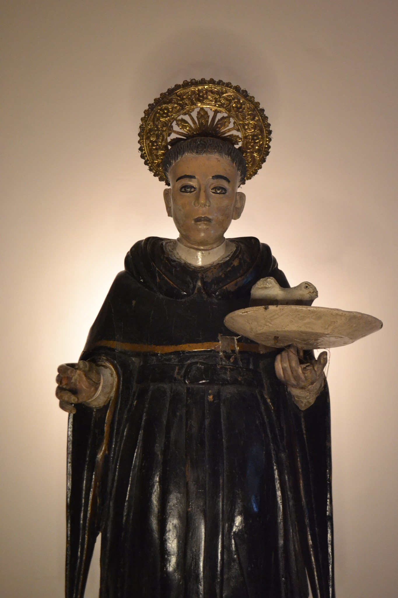
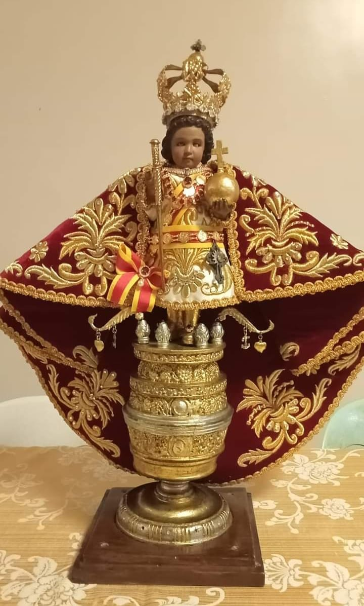
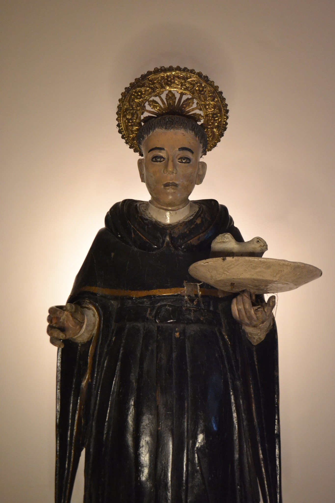
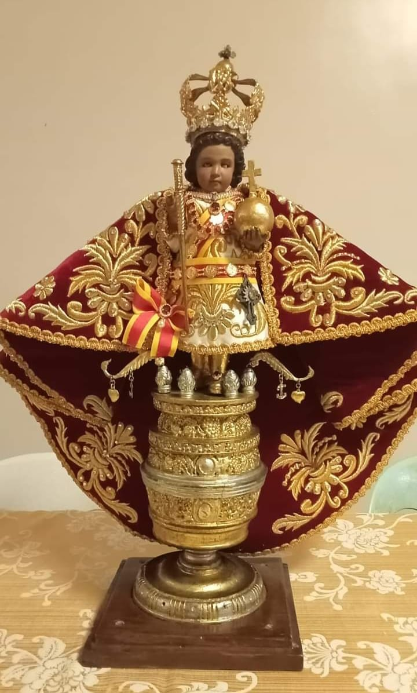

Name: Ramel Angelo C. Marinay
Age: 18 years old
Address: 73 - Dela Concepcion Suba st. Cebu City
Gender: Male
San Nicolas Elementary School
Abellana National School
Animating 2d & 3D
Digital Art
Playing Games
Listening to Music
Playing Instruments
 


